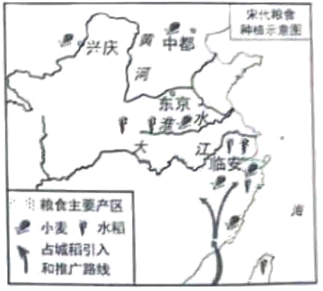
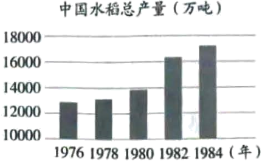

2024年北京中考历史 第21题 解析
21. 水稻种植史是中国农业不断成长、进步的生动写照。
材料一
时期 | 概况 |
史前 | 目前世界上最早的栽培稻发现于中国，多地发现了距今12000-10000年的栽培稻遗存。距今约7000年，河姆渡人使用以骨耜为主的工具种植水稻 |
秦汉 | 水稻种植运用了去除杂草、及时灌水排水等技术，并使用草木灰等天然肥料。 |
魏晋南北朝 | 江南地区普遍实行了麦稻兼作，五岭以南地区还种植了双季稻，水稻种植推广了选种育种、施用粪肥、育秧移栽等技术。《齐民要术》记载了水稻种植技术。 |
隋唐 | 发明并推广曲辕犁和筒车等生产工具。曲辕犁轻便灵巧，广泛应用于稻作。 |
宋元 | 水稻一年两熟制、稻麦复种技术得到推广，耕地利用率得到提高。长江中下游广泛使用拔秧工具秧马 |
明清 | 明代徐光启的著作 A 系统总结了南方稻田的旱作技术。水稻育秧技术也得到了快速发展，形成了多种育秧方法 |
（1）依据材料一并结合所学，A处是_______（填序号）。概括中国古代水稻种植发展的表现。
①《本草纲目》 ②《农政全书》 ③《天工开物》
材料二 唐代以前，水稻在全国粮食生产中不占主要地位。宋代太湖地区的水稻亩产量约450斤，比唐代南方的水稻亩产量增长了60%左右。当时有“苏湖熟，天下足”之说，水稻已经是养活半数中国人的作物。
——摘编自曾雄生《中国农业通史》

（2）依据材料二，写出宋代水稻种植业的发展情况。
材料三
 20世纪70年代，我国成功培育出籼型杂交水稻，亩产比常规稻增加20%左右，杂交水稻占水稻种植总面积的比例从1976年的0.38%增长到1984年的23%。 ——依据《中国农业统计资料》等 | 一位同学创作的宣传画 |
（3）依据材料三并结合所学，指出1976-1984年我国水稻总产量的变化趋势，并分析原因。综合以上材料，说明这幅宣传画的含义。
【答案】（1）内容：②。
表现：种植历史悠久，种植范围不断扩大，品种不断改进，生产技术不断提高。
（2）表现：水稻产量高，成为主要的粮食作物；水稻种植范围广；引进占城稻。
（3）趋势：我国水稻总产量不断增长。
原因：20世纪70年代，袁隆平成功培育出籼型杂交水稻，促进水稻产量的增长；家庭联产承包责任制在全国推广，解放了农村生产力，提高了农民的种粮积极性。
含义：缅怀袁隆平，增强粮食安全意识等。
【解析】
【小问1详解】
内容：根据材料一“明代徐光启 著作”和结合所学知识，明代徐光启著有《农政全书》，全面总结了我国古代农业生产的 先进经验、技术革新。
著作”和结合所学知识，明代徐光启著有《农政全书》，全面总结了我国古代农业生产的 先进经验、技术革新。
表现：根据材料一“目前世界上最早的栽培稻发现于中国”分析可知水稻种植历史悠久；根据材料一“水稻种植运用了去除杂草、及时灌水排水等技术”“水稻一年两熟制、稻麦复种技术得到推广”等分析可知生产技术不断提高；根据材料一信息分析还可知种植范围不断扩大，品种不断改进。
【小问2详解】
表现：根据材料二“宋代太湖地区的水稻亩产量约450斤……水稻已经是养活半数中国人的作物”分析可知水稻产量高，成为主要的粮食作物；根据图例信息并分析可知水稻种植范围广，引进占城稻。
【小问3详解】
趋势：根据柱状图并分析可知我国水稻总产量不断增长。
原因：根据材料三“20世纪70年代，我国成功培育出籼型杂交水稻，亩产比常规稻增加20%左右”和结合所学知识，20世纪70年代，袁隆平成功培育出籼型杂交水稻，促进水稻产量的增长；根据材料三图，中国水稻总产量是从1978年后增长速度加快，可知原因还有：家庭联产承包责任制在全国推广，解放了农村生产力，提高了农民的种粮积极性。
意义：本题属于开放性试题，根据宣传画可知反映的是我国粮食有关的主题画，结合袁隆平的贡献，由此可以分析宣传画表达对袁隆平的缅怀和粮食安全意识。